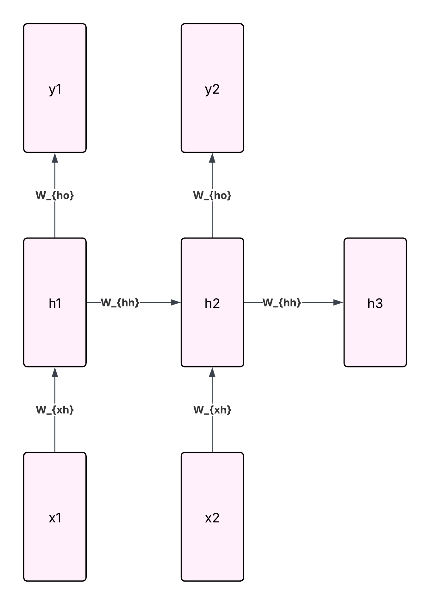

Deep Learning using Images and Signals
Table of Contents
- 1. Introduction
- 2. McCulloch Pitts Neuron
- 3. Perceptron
- 4. Non-Linear Regions
- 5. Gradient Descent
- 6. Overfitting Techniques
- 7. Optimization
- 8. Convolutional Neural Networks
- 8.1. Issue of ANN (Artificial Neural Network)
- 8.2. Sliding Window Technique
- 8.3. Types of Convolution based on Padding
- 8.4. Striding
- 8.5. Grand Formula for Feature Map
- 8.6. Pooling
- 8.7. Flattening Layer
- 8.8. LeNet
- 8.9. AlexNet
- 8.10. YOLO NAS (Neural Architectural Search)
- 8.11. VGGNet
- 8.12. ResNet
- 8.13. GoogleNet
- 8.14. Applications
- 8.15. UNet
- 8.16. YOLO
- 9. Recurrent Neural Network
- 9.1. Introduction
- 9.2. Issue of ANNs
- 9.3. What RNNs do
- 9.3.1. Working:
- 9.3.2. Full Workflow, explained with the case of a word predictor
- 9.3.3. A Simple RNN layer has input size of 10 and hidden size of 20. Calculate the total number of trainable parameters, given that there are 10 RNN cells.
- 9.3.4. Given the following architecture, find the number of trainable parameters.
- 9.4. Calculating Loss
- 9.5. Backpropagation through Time (BTT)
- 9.6. Input to RNN
- 9.7. Layer Normalization
- 9.8. Issues
- 10. Long Short Term Memory (LSTM)
- 11. Gated Recurrent Unit (GRU)
- 12. Encoders and Decoders
- 13. Attention
1. Introduction
- ML is a subset of AI, and DL is a subset of ML.
- In Machine Learning, the model is given ready-made features to be trained on.
- In contrast, in the case of deep learning, the model interprets features on its own. For example, here you can just give thousands of images of fruits and the DL model can learn. An ML model would have to be given explicit features.
Here are the general differences:
Basis Machine Learning Deep Learning Human intervention yes no Data Required less more Training time less more Accuracy less more Hardware Requirements less (CPU is fine) more (needs GPU)
1.1. How to choose data
- When the inter-class distance is too high, the accuracy of the model will be abnormally high. This essentially means that the data is too easy to classify (eg. cherries and mangoes).
- In general, choose data from the recent past only. Data from 10 years ago typically had a higher inter-class distance, designed to cater to the deep learning models of those times (and they weren’t as advanced as today’s models).
1.2. General Terminologies
1.2.1. Epoch
- One iteration over the entire dataset.
2. McCulloch Pitts Neuron
- An artifial neuron passes a linear combination of inputs to an activation function, and adds a constant called bias.
- The MP Neuron is the first artificial neuron (1943).
- Multiple Binary inputs
- Outputs a binary function
- Every neuron undergoes two functions:
- g: ( Aggregation ) \[ \Sigma_{i=1}^{n} x_{i} = x_{1} + x_{2} + x_{3} + ...\]
- f: (Activation function, which is also the output of the neuron) \[ f(x) = 1 when g(x) \ge \theta \]
- The activation function is the thing that will tell us whether we should fire this neuron or not.
For example, Say we have to make f(x) = Boolean OR, for 2 binary inputs.
\(x_{1}\) \(x_{2}\) \(x_{1}\) ∨ \(x_{2}\) \(g(x)\) 0 0 0 0 0 1 1 1 1 0 1 1 1 1 1 2 f(x) would be \(f(x) = 1 for g(x) \ge 1 \because \theta = 1 \)
If f(x) = Boolean AND, for 2 binary inputs
\(x_{1}\) \(x_{2}\) \(x_{1}\) ∧ \(x_{2}\) \(g(x)\) 0 0 0 0 0 1 0 1 1 0 0 1 1 1 1 2 f(x) would be \(f(x) = 1 for g(x) \ge 2 \because \theta = 2 \)
- All in all, you can use the McCulloch Pitts Neuron for Linearly Separable Boolean Functions.
For instance, \(XOR\) is a non-linearly separable boolean function. You can’t use a single line to make a decision boundary.
2.1. Types of Inputs
- Inhibitory Input: It’s an input which can independently change the decision
- Exhibitory Input: These inputs can only collectively change the decision.
For example, here’s the AND-NOT function:
\(x_{1}\) \(x_{2}\) \( f(x) = x_{1} \overline{x_{2}} \) 0 0 0 0 1 0 1 0 1 1 1 0 When \(x_{2} = 1\), \(f(x)\) is always 0, regardless of what \(x_{1}\) is. So \(x_{2}\) is inhibitory.
Here’s another example:
\(x_{1}\) \(x_{2}\) \( f(x) \) 0 0 1 0 1 0 1 0 0 1 1 0 When \(x_{2} = 1\), \(f(x)\) is always 0, regardless of what \(x_{1}\) is. Similarly, \(x_{1} = 1\), \(f(x)\) is always 0, regardless of what \(x_{2}\) is. In this case, both \(x_{1}\) and \(x_{2}\) are inhibitory.
3. Perceptron
- This is for non-boolean classification, where now each input have weights.
- \(g(x) = \Sigma_{i=1}^{n} w_{i}x_{i} = w_{1}x_{1} + w_{2}x_{2} + w_{3}x_{3} + ... \)
- f(x) = 1 for g(x) ≥ θ
- \( \Sigma_{i=1}^{n} w_{i}x_{i} \ge \theta \)
- \( \Sigma_{i=1}^{n} w_{i}x_{i} - \theta \ge 0\)
- \( \Sigma_{i=1}^{n} w_{i}x_{i} + w_{0} \ge 0\)
- \(w_{0}\) is called the bias,and it’s a threshold.
\[ g(x) = W^{T}X = w_{0} + \Sigma_{i=1}^{n} w_{i}x_{i}\]
Take a simple example where \(f(x) = x_{1} \land x_{2} \)
\(x_{1}\) \(x_{2}\) \( f(x)\) g(x) 0 0 0 \(w_{0} < 0 \) 0 1 0 \(w_{0} + w_{1}*0 + w_{2}*1 < 0 \) 1 0 0 \(w_{0} + w_{1}*1 + w_{2}*0 < 0 \) 1 1 1 \(w_{0} + w_{1}*1 + w_{2}*1 > 0 \) - Let \(w_{0} = -1, w_{1} = 0.5 , w_{2} = 0.5\)
- \(y_{in} = g(x) \) for these values substituted
- Let \(w_{0} = -1, w_{1} = 0.5 , w_{2} = 0.5\)
3.1. Perceptron Learning
- \(g(x) = W^{T}X = 0 \). \(W\) is perpendicular to any point X lying on the decision boundary.
If the angle between W and X is α, then: \[ cos(\alpha) = \frac{W^{T}X}{|W||X|} \]
α is less than 90 for \(p_{1}\), \(p_{2}\) and \(p_{3}\), and will be greater than 90 for \(n_{1}\), \(n_{2}\) and \(n_{3}\).
- Let \(\alpha_{new}\) be the angle made by the new \(W^{T}\) and X.
\[ W_{new}^{T} = W^{T} + \eta X \]
where η is called the learning rate.
- \( cos(\alpha_{new}) = \frac{W_{new}^{T} X}{|W_{new}^{T}|}\)
- \( cos(\alpha_{new}) \alpha W_{new}^{T} X\)
- \(\alpha_{new} < \alpha \)
- \( cos(\alpha_{new}) = \frac{W_{new}^{T} X}{|W_{new}^{T}|}\)
3.2. AND gate
- Given Bipolar data (only -1 and 1)
- \(g(x) = w_{0} + w_{1}x_{1} + w_{2}x_{2} = y_{in}\)
- \(f(x) = 1 if g(x) \ge 0, f(x) = -1 if g(x) < 0 \)
- We try to match a target \(t\) to all of the outputs
The algorithm is given as:
for each input: compute y_in # aka. g(x) aka. aggregation compute y_out # aka. f(g(x)) aka. activation aka. y_out if t != y: delta_w = alpha * t * x w = w_old + delta_w
Assume all weights to be 1 and bias to be -1 for this example.
| \(x_{1}\) | \(x_{2}\) | \(t \) | g(x) | \(y_{in} \) | \(y_{out} = f(x)\) | \(\Delta w_{1} =\) | \(\Delta w_{2} = \) | \(\Delta b \) | \(w_{1} \) | \(w_{2}\) | b |
|---|---|---|---|---|---|---|---|---|---|---|---|
| -1 | -1 | -1 | \(w_{0} < 0 \) | 0 | 1 | 1 | 1 | -1 | 1 | 1 | -1 |
| -1 | 1 | -1 | \(w_{0} + w_{1}*0 + w_{2}*1 < 0 \) | -1 | -1 | 1 | 1 | -1 | 1 | 1 | -1 |
| 1 | -1 | -1 | \(w_{0} + w_{1}*1 + w_{2}*0 < 0 \) | -1 | -1 | 1 | 1 | -1 | 1 | 1 | -1 |
| 1 | 1 | 1 | \(w_{0} + w_{1}*1 + w_{2}*1 > 0 \) | 1 | 1 | 1 | 1 | -1 | 1 | 1 | -1 |
3.3. Hebbian Rule
\[w_{new} = w_{old} + \Delta w\] where \( \Delta w = \eta t x \)
- The traditional Hebbian rule is unsupervised (no target value). It uses \(y_{out}\) instead of target value \(t\).
- What we’re following is called supervised Hebbian rule.
3.4. Perceptron Learning Rule or Delta Rule
\[w_{new} = w_{old} + \Delta w\] where \( \Delta w = \eta(t-y)x \)
- Instead of using \(\eta t x \), and hoping t==y at some point, we use the difference between the predicted value and the actual value.
- Bias is also updated using the same formula, just that \(x=1\).
Assume both weights and the bias to be 0, and the learning rate \(\eta\) to be 0.1.
Epoch \(x_{1}\) \(x_{2}\) \(t \) \(y_{in} \) \(y_{out} = f(x)\) \((t-y) \) \(\Delta w_{1} =\) \(\Delta w_{2} = \) \(\Delta b \) \(w_{1} \) \(w_{2}\) b 1 1 1 1 0 1 0 0 0 0 0 0 0 - This rule, is supervised, and error based, as opposed to the correlation based approach in the traditional hebbian rule.
3.5. Number of Parameters in a Neural Network
- Let Ni be the number of neurons in layer \(i\), and \(n\) is the number of layers (layer 1, layer 2, layer 3, … layer \(n\)).
- Total = [Number of weights] + [Number of biases]
- Total = [N1*N2 + N2*N3+ N3*N4 + …] + [N2 + N3 + N4 + …]
- Total = [Σi=1n-1Ni*Ni+i] + [Σi=2nNi]
4. Non-Linear Regions
- Generally, one line (decision boundary) is formed by one neuron.
- A combinations of neurons can give you multiple lines and you can wrap around scattered regions which can’t be split up by one single line.
- A non-linear boundary (a curve) is simply a linear combination of lines (and hence neuron).
- These neurons are just inputs to the next neuron.
4.1. Activation Function
- The error function must be continuous and differentiable, so that you’re not taking sudden and high jumps.
4.1.1. Sigmoidal Function
\[ f(x) = \frac{1}{1+e^{-x}} = \frac{e^{x}}{1+e^{x}} \]
- The Sigmoid function is what we’ve been using so far, and is essentially the step function.
- This results in a much more smoother curve.
- With larger values or smaller values of x, the sigmoidal function has the issue of vanishing gradient (large changes in x, leads to not much change in y).
- Sigmoidal function always tells you the probability (output is between 0 and 1) this is generally used for the last layer of the network that performs classification.
4.1.2. Tanh
\[ f(x) = \frac{e^{x} - e^{-x} }{e^{x} + e^{-x}} \]
- This is better with dealing with vanishing gradient, but it’s computationally expensive because of so many \(e^{x}\).
- Hyperbolic tan aka. tanh is zero-centered because it’s from 0 to 1.
4.1.3. ReLU
\[ f(x) = max(0,x) \]
- Stands for Rectified Linear Activation Function
- It doesn’t do anything to positive values. For negative values, it’s 0.
- This is called dead ReLU becaues it just kills all negative values.
- This is very fast and requires extremely minimal computations, and hence ReLU converges faster than the other activation functions.
- ReLU is used for layers which output a value. Eg. Heart Rate. You can’t afford to truncate that to a range [0,1].
- But at the same time, negative values are killed, and hence you should be using ReLU only in hidden layers.
4.1.4. Leaky ReLU
\[f(x) = \begin{cases} x & \text{if } x \geq 0, \\ \alpha x & \text{if } x < 0, \end{cases}\]
4.1.5. Swish/ SeLU
\[f(x) = x * Sigmoid(x)\]
4.1.6. Softmax function
\[ P(class_{i}) = \frac{e^{Z_{i}}}{\Sigma_{1}^{n}e^{Z_{i}}}\]
- This ensures that the probability distribution of the output layer, sums up to 1.
- This is used for multi-classification models (like digit identification). The output layer is full of neurons (0-9), each giving a probability of being that number, as the output. Naturally, all of those probabilities must add up to 1. You can’t have 70% chance of being 1 and 80% chance of being a 7 at the same time.
4.2. Hidden Layers
- A general trick is that, the number of neurons in a hidden layer is \[\frac{2}{3}*N_{i} + N_{o}\] where Ni is the number of neurons in the input layer, and No is the number of neurons in the output layer.
5. Gradient Descent
5.1. Weight Initialization
- In a neural network, you have to initialize weights with random values.
- If you initialize all the weights with zeroes, it can lead to something called
the symmetry problem.
- All of the weights are equal, and hence the aggregation and activation for every neuron gives the same output.
- All the neurons are learning the same thing, and it’s almost like there’s only one neuron present in each layer.
5.2. Loss
5.2.1. 0/1 Loss aka log loss aka binary cross entropy loss.
\[ Loss(y,p) = -[y*log(p) + (1-y)*log(1-p)] \] where y = actual label and p = predicted probability
- y and p are just probabilities and their values are between 0 and 1.
- Log is taken because for smaller values of a probability, the log of it is very negative. Log of max probability (1) is 0.
- Higher loss means higher uncertainty.
- Given a binary inputs {0,1}, compute binary cross entropy loss
- For X, actual class = 1, predicted probability = 0.8
- \( Loss(y,p) = -[y*log(p) + (1-y)*log(1-p)] \)
- \( Loss(1,0.8) = -[1*log(0.8) + (1-1)*log(1-0.8)] \)
- \( Loss(1,0.8) = -log(0.8) \)
- For Y, actual class = 0, predicted probability = 0.2
- \( Loss(y,p) = -[y*log(p) + (1-y)*log(1-p)] \)
- \( Loss(0,0.2) = -[0*log(0.2) + (1-0)*log(1-0.2)] \)
- \( Loss(0,0.2) = -log(0.8) \)
- For X, actual class = 1, predicted probability = 0.8
- Loss Function for an entire Layer
\[-\frac{1}{n} \sum_{i=1}^{n} \left[ y^{(i)} \log(p^{(i)}) + (1 - y^{(i)}) \log(1 - p^{(i)})\]
5.2.2. Mean Square Error
\[Loss = \frac{(t-y)^{2}}{2}\] where \(t\) is the target value and \(y\) is the predicted value.
5.2.3. Learning Rate vs Loss
This is what happens with different learning rates:
5.3. Working of Gradient Descent
- There are mainly 3 steps:
5.3.1. Feedforward
- Find aggregate and activations throughout the network till you reach the end.
5.3.2. Find Loss or Error
- Calculate Mean Square Error or 0/1 loss (or whatever loss you need).
5.3.3. Backpropagation
- Essentially, you have to update weights as: \[w_{new} = w_{old} - \eta \frac{\delta L}{\delta w_{i}}\] Where \(L\) is the loss function (we’ll consider MSE)
- \(\frac{\delta L}{\delta w_{i}}\) is the change in the Loss function with respect to the change in one parameter i.e. how much the loss changes for a given small change in a weight/bias. This is called the gradient.
To get to L, the path was
\(y_{in} = \Sigma_{i=0}^{n} w_{i}x_{i}\) → \(y_{out} = \frac{1}{1+e^{-y_{in}}}\) → \(L = \frac{(t-y_{out})^{2}}{2}\) Aggregate Activation Loss Function To calculate \(\frac{\delta L}{\delta w_{i}}\), we follow the same thing but in reverse:
\(y_{in} = \Sigma_{i=0}^{n} w_{i}x_{i}\) ← \(y_{out} = \frac{1}{1+e^{-y_{in}}}\) ← \(L = \frac{(t-y_{out})^{2}}{2}\) Aggregate Activation Loss Function - \(\frac{\delta L}{\delta w} = \frac{\delta \frac{(t-y_{out})^{2}}{2}}{\delta w}\)
- \(\frac{\delta L}{\delta w} = \frac{\delta \frac{(t-y_{out})^{2}}{2}}{\delta y_{out}} * \frac{\delta \frac{1}{1+e^{-y_{in}}}}{\delta y_{in}} * \frac{\delta (w_{0} + w_{1}x_{1} + ...)}{\delta w}\)
- \(\frac{\delta L}{\delta w} = -(t-y_{out}) * (y_{out}(1-y_{out})) * z_{1}\)
- This was the loss for the second last layer. We went just one layer backward, and stopped at the aggregate of that layer. The aggregate of that layer, is the activation of the previous layer.
- So to get the gradient of the previous layers, repeat this process of multiplying partial derivative of activation of previous layer and partial derivative of aggregation of previous layer.
5.4. Vanishing Gradient
- During gradient descent, as errors are propagated backward through the layers, the magnitude of the gradient keeps reducing.
- By the time the errors are propagated to the initial layers, they’re too small.
- Earlier layers are important for the model to understand low level features, so if their weights don’t update, the model can’t understand low level features.
- The easiest fix would be to use ReLU instead of tanh and sigmoid because they suffer the most from vanishing gradient.
6. Overfitting Techniques
6.1. Early Stopping
- You allocate some data for training.
- You allocate some data for validation, and this is used to see how the model performs after every epoch.
- Initially, the training loss and the validation loss are both very high.
- Training loss decreases because it’s getting more relevant to the training dataset (it has started to generalize).
- Validation loss decreases because it has started to generalize.
- After a certain point of time, when the model has overtly learned the data and
overfits:
- Training loss still decreases as it’s still getting more relevant to the training dataset.
- But validation loss increases because the model is getting relevant only to the training data, and is getting irrelevant to the validation data: it’s deviating from the general pattern of the data.
- You stop training the model when the training loss reduces, but the validation loss starts increasing. This is called early stopping.
6.2. Drop Out
6.3. Regularization
- This helps in combating overfitting.
6.3.1. L-2 Regularization
- Instead of directly backpropagating on the loss, you add a penalty. This penalty is usually the sum of square of all of the weights in the network. \[Loss_{total} = Loss + \lambda ||\Sigma_{i}^{n} w_{i}^{2}|| \]
- As your loss keep reducing, the weights start increasing, and hence the net effect on the loss is a massive increase.
- So we should reduce the loss, but not at the cost of increasing weights.
- The penalty is exponentially proportional to the weights, and hence even slightly reducing the weights will shrink the penalty.
- The new weight update rule is: \[w_{new} = w_{old} - \eta \frac{\delta L}{\delta w_{i}} - \lambda ||\Sigma_{i}^{n} w_{i}^{2}|| \]
6.3.2. L-1 Regularization
- You still add a penalty, but this time the weights aren’t squared. \[Loss_{total} = Loss + \lambda ||\Sigma_{i}^{n} w_{i}|| \]
- The new weight update rule is: \[w_{new} = w_{old} - \eta \frac{\delta L}{\delta w_{i}} - \lambda ||\Sigma_{i}^{n} w^{}|| \]
- Here since the penalty is directly proportional to the weights. So to reduce the penalty by a number, the reduction in weights should be that big too. Hence weights have more pressure to shrink, and even provoking some to be reduced to zero.
- When we say weights are reduced to zero, it means the input to neurons is not being used. Hence, this helps in dimensionality reduction.
6.4. Adding Noise to the inputs
- x + Noise ⇒ \(\bar{x}\)
- \(bar{x}\) is passed to neural network h(x) and outputs \(\hat{x}\)
- xhat is more similar to x than \(bar{x}\).
6.5. Ensembling
6.6. Batch Normalization
- Activations
- Normalize
- Scale and Shift
- Find Output
7. Optimization
7.1. Unconstrained Optimizations
- Only concerned with the objective function.
7.2. Constrained Optimization
- Do something with the objective function, but at the same time, you have some contraints.
8. Convolutional Neural Networks
8.1. Issue of ANN (Artificial Neural Network)
- Dense/ Fully Connected Neural Networks: Every neuron in 1 layer is connected to every other neuron in the next layer.
- Up until now, to use images in a neural network, you’d vectorize the white-scale values and pass that 1D vector to the neural network.
- The issue is, you’re losing spacial information. For example:
- An image of a number absolutely should be spread across the same pixels for every image in the dataset.
- The number can be in different shapes, but the size and geographical position must remain consistent.
- If a model is trained on a dataset of images taking the whole space and centered, you can’t expect the model to understand the image of a number smaller in size, and is located on the top-left corner of the image.
8.2. Sliding Window Technique
- Convolution is a linear mathematical operation \[ S_{(i,j)} = (I*K)_{(i,j)} = \Sigma_{a=0}^{m-1} \Sigma_{b=0}^{n-1} I_{(i-a, j-b)}K_{(a,b)} \]
- The output is called the feature map.
8.2.1. Kernel
- Sliding window (w) is called the kernel and it’s also called a filter.
- The kernel and the input data have the same dimension.
- Assume we’re talking about monochrome square images.
- A kernel is a moving miniature outline of the image, that moves across the
image. It’s a
n x nmatrix where p<m (the image size ism x m). - The miniature outline, is technically a matrix of the same size, containing weights for each pixel.
- The kernel is referenced using 1 single pixel.
- When the size of the kernel is odd (
nis odd), the miniature outline is centered around this single pixel. - When the size of the kernel is even (
nis even), the single pixel has to be in the corner of the miniature outline.
- When the size of the kernel is odd (
- When the kernels are RGB square images, the image matrix, and the kernel, both are 3 dimensional. They’re 3 slices of 2D kernels.
- The depth of the kernel is the same as the depth of the image.
- The number of weights/parameters would be
n x n x depth x number_of_kernels. - If you have a
n x nkernel (n is odd), you will lose \(\frac{n-1}{2} \) pixels on each side. This happens when the center of the kernel is on any of the pixels at the edge.
8.2.2. How CNN is viewed as an ANN
- Sparse Connections
- In an ANN, you vectorize the image, and every pixel (every neuron in the input layer), has connections with every other neuron in the next layer.
- In a CNN, you only have the pixels in that kernel connected the neurons in the next layer, and hence the connections (hence the weights) are way less.
- In other words, CNN has sparse conenctions.
- But all the pixels will make it through the network, because the kernel travels across the entire image. 1 kernel contains weights and that aggregate goes to 1 neuron in the next layer (the feature map).
- Receptive Field
- Receptive Field is the information a neuron gets from a previous layer.
- In the first layer, the
n x nkernel goes through all the pixels, because that’s the input layer. - In the next layer, the
n x nkernel goes through all the aggregates formed by the kernel in the previous layer. - So as you keep going through the network, the kernel starts zooming out on the image.
- In the first layer, the
- Receptive Field is the information a neuron gets from a previous layer.
- Weight Sharing
- Kernels only change layer by layer. So when a kernel moves through an image, taking all the aggregates, they’re the same weights being used across the image. This is called weight sharing.
8.3. Types of Convolution based on Padding
8.3.1. Zero Padding / Valid Convolution
- Essentially, what we’ve been doing is zero padding convolution.
- The feature Map is going to be smaller than the input image.
- Given an
n x nkernel, the size of the feature map is \( width_{image} - width_{kernel} + 1\), and \(height_{image} - height_{kernel} + 1 \)
8.3.2. Just Enough Zero Padding / Same Convolution
- Instead of just losing information, we pad the image with \(\frac{n-1}{2} \) number of 0s on each side. So now you won’t have out-of-bound
- The feature map is going to be of the same size of the image.
8.3.3. Full Convolution
- Now, we pad the image with \(n-1\) number of 0s on each side.
8.4. Striding
- When S=1, you move the kernel 1 pixel at a time (regardless of direction).
- When S=2, you move the kernel 2 pixels at a time.
- Essentially, striding downsamples.
8.5. Grand Formula for Feature Map
\[ W_{featureMap} = \frac{W - F + 2P}{S} + 1 \] \[ H_{featureMap} = \frac{H - F + 2P}{S} + 1 \] where
- P is the padding on one side
- W is the width of the image
- H is the height of the image
- F is the side length of the kernel/filter.
8.6. Pooling
- Pooling is a dynamic kernel of sorts. You’re not aggregating, but you’re doing a simpler dynamic operation.
- Pooling is used to downsample (reduce the dimensions) of the feature map.
- You take a lower number of pixels to represent some sort of feature/characteristic, and this helps in faster training, as well as reducing overfitting.
- The number of parameters involved in pooling is 0.
8.6.1. Max-Pooling
- In the kernel, instead of giving aggregate to the neuron in the next layer, you simply give the largest number in the portion of the image the kernel has passed through.
- Your data becomes translation invariant, because the information of a pixel is mostly similar to the information of its neighbours.
8.6.2. Global Average Pooling
- One layer that performs global average pooling, is used to seperate the layers of the pre-trained models and the custom layers that you are adding.
- Global Average Pooling converts a 3D image
(X x Y x Z)into a 1D vector(1 x 1 x Z). - It takes the average of each layer, and converts it into a single number.
- While this drastically reduces the number of parameters, you do lose on finer details.
8.7. Flattening Layer
- When a convolutional layer is connected to a dense layer, a flattening layer must be used.
- It converts an n-dimensional layer (the feature map), into a 1-dimensional
layer. For example, a
55 x 55 x 96vector turns into a(55*55*96) x 1layer. Basically, it becomes a290400 x 1layer.
8.8. LeNet
- Proposed to recognize handwritten postal zip codes.
8.8.1. Architecture
- Each input image is a 32x32 image of a handwritten character.
- Kernel Size: 5x5
- Striding: 1
Padding: 0
8.8.2. Convolution Layer 1
- Size of Feature Map = \(\frac{32-5+0}{1} + 1\) = 28x28
8.9. AlexNet
8.9.1. Dataset
- Trained on ImageNet-1k
- 1000 Classes
- 1.4 Million Images
8.9.2. Structure
Layers
5 Convolutional Layers 3 Dense Layers Total of 8 Layers - 60 Million Parameters
- Input size:
227x227x3or224x224x3
8.10. YOLO NAS (Neural Architectural Search)
- Instead of relying on manual design by human beings, the model automates the process of finding the best neural network architecture (the layers used, activations, pooling, etc).
8.11. VGGNet
- VGG introduced the fact that there’s no need of larger kernels.
- Instead of a larger kernel, you can use a smaller kernel multiple times (sequentially). Use the kernel once, and then on the obtained feature map, use the kernel again.
- VGG-19 means there are 19 layers.
- It’s represented as:
\[Conv(m, n, X)\]
where
m x nis the kernel size- X is the number of kernels chosen
- Essentially, each kernel has different weights and each of them form their own feature map. These feature maps make up a big feature map with a certain amount of depth.
8.12. ResNet
- Early layers learn fine details and edges, while later layers learn complex features.
- Essentially, the finer details like edges might be similar across all layers and perhaps color, shape and size of the objects are different.
- This means you’ll unnecessarily keep learning finer details, to get to the part where you actually need to learn (i.e. the more complex features).
- To solve vanishing gradient, you add a skip connection between layers.
- You directly pass the input of a layer to the end, so you have the final layers intact, and all you need to do is to learn upon the changes made to those fine details.
- Mathematically
\[y=F(x)+x\]
where
- x is the feature map on one place of the image
- F(x) is the sequence of convolutions or activations applied
- y is the new feature map
8.13. GoogleNet
- This introduced the concept of parallel convolutions.
- Given a
W x H x D, you turn it into aW X H X 1feature map using a1 x 1kernel moving across the depth. - Each layer is a network, called an inception block.
8.14. Applications
| Recognition/Classification | Classification & Localization | Object Detection |
|---|---|---|
| Classifies one whole image | Detects an object inside a | Detects several objects |
| picture | inside an object and | |
| seperates them using | ||
| bounding boxes | ||
| ResNet, GoogleNet, MobileNet | Simplified YOLO, RCNN | YOLO, R-CNN |
| Requires COCO Format: | ||
| x, y, label |
| Semantic Segmentation | Instance Segmentation |
|---|---|
| Different types of objects | Different types of objects |
| inside an image are given | inside an image are given |
| different colored pixels | diferent colored pixels |
| (as opposed to just boxes | and there’s a variation of |
| in detection, which is | color for different instances |
| faster than segmentation) | present in the image too. |
| For example, all dogs | For example, all dogs |
| get red and all sheep get | get red, all sheep get |
| blue | blue, and individual sheep |
| get different shades | |
| of red |
8.15. UNet
- This is a type of segmentation.
- The entire network is divided into two halves:
- Encoder
- Decoder
- The encoder can be made up of smaller encoders too (all these encoders must have the same structure). Same goes with the decoder.
- The number of encoders (= number of decoders) is the maximum number of skip connections you can have.
- As you move across the encoders, the size of the feature map keeps decreasing, but the amount of features contained, keeps increasing.
- The part where the last encoder is connected to the first decoder, is caleld the bottleneck, and it has the smallest feature map, but the most amount of features.
8.15.1. VGGNet used as an encoder
- In UNet, LHS is one big encoder, and the RHS is one big decoder.
- Some people replace the entire LHS, with the convolutional layers of VGGNet (and not the flattening layers and the dense layers).
- The output of the convolutional layers output a feature map, and this feature map is directly given to the bottleneck
8.16. YOLO
8.16.1. What it is
- Essentially, it’s a complex model that does parallel convolutions, to work on multi-scale and multi-dimensional features.
- Overall, there’s a backbone part, a neck part, and a head part.
- These parts consist of different blocks
- C2F
- RepnCSP
- ELAN
8.16.2. Code
- There are about 13 types of YOLO, and each type has different sizes, L, S, XL, XS, nano, T (tiny), C (compact), which talk about the number of parameters.
- A newer variant of YOLO, doesn’t guarantee better results.
YOLO is given by
ultralytics.pip install ultralytics
and in the code:
from ultralytics import YOLO
- They contain two types of files:
.ptcontains pre-trained weights from COCO..yamlcontains the structure of YOLO, and hence you train the model from scratch.
- If you load
.ptfirst, and then.yaml, it means you’re fine-tuning the existing weights for your dataset. Your.ptfile will contained fine-tuned weights. - If you load
.yamlfirst, it means you’re training the model from scratch, and hence your.ptfile will contain weights obtained from training the model from scratch. The
.yamlfile contains information on:layer_numberfromn… 0 -1 1 1 -1 1 2 -1 1 3 [-1,2] 1 4 … … 5 … … -1means it’s coming from the previous layer and2means it’s coming fromlayer_number = 2- These layer numbers can change when you modify the YOLO model (add or remove
layers), so the
fromnumber should be changed accordingly.
9. Recurrent Neural Network
9.1. Introduction
- Up until now:
- Each input to the network was independent of the previous or future inputs.
- Inputs were of fixed size.
- RNNs are specialized to work on data where the input depends on previous or future inputs, and are of variable sizes.
- You can have RNNs of CNN, where CNNs are used for recognizing individual images, and RNNs are used to relate the sequence of these images.
9.2. Issue of ANNs
- Sentences like “I ate a pizza” and “A pizza was ate by me” use almost the same words and mean the same thing, but an ANN will struggle to figure this out.
- This is because ANNs process things in a fixed order, as one single static chunk. This static chunk would have no information on whether “pizza” came before “ate” or after “ate”, unless it’s explicitly trained on all possible ways you can represent every single sentence of the dataset.
- For this, you’d have to use one-hot encoding for each and every word:
Say there are 25000 words in the dataset. Every word in the dataset would be represented as:
how → [ 0 0 0 0 1 0 … 0 0 ] word1 word2 word3 word4 word5 word6 word24999 word25000 where “how” is the 5th word.
- Each word in the dataset, is a massive
1x25000bit vector.
9.3. What RNNs do
- RNNs process the sentence word-by-word, and for each word, it computes a function called a hidden state.
A hidden state is a function of the current word and the previous word:
Hidden_State(t) = f( Current_Word(t), Hidden_State(t-1) )It serves as the network’s short term memory.
ANNs look like:
x1 → ANN → y1 x2 → ANN → y2 x3 → ANN → y3
Whereas, RNNs look like:
x1 → [RNN Cell] → h1 → y1 ↑ h0 (usually zeroes) x2 → [RNN Cell] → h2 → y2 ↑ h1 (from before) x3 → [RNN Cell] → h3 → y3 ↑ h2- One thing to note is that RNNs can’t handle spatial data.
9.3.1. Working:
- Given Data:
- Input vector at time t: \[x_{t} = \begin{bmatrix} 1 \\ 2 \end{bmatrix}\]
- Weight from input x to hidden layer: \[w_{wh} = \begin{bmatrix} 1 & 0 \\ 0 & 1 \end{bmatrix}\]
- Weight from previous hidden layer to current hidden layer: \[w_{hh} = \begin{bmatrix} 0.5 & 0 \\ 0 & 0.5 \end{bmatrix}\]
- Weight from hidden layer to output: \[w_{ho} = \begin{bmatrix} 1 & 1 \\ 0 & 1 \\ 1 & 0 \end{bmatrix}\]
- Biases: \[b = \begin{bmatrix} 0 \\ 0 \\ 0 \end{bmatrix}\] (The size of the bias is the same as the size of the hidden state)
First we combine input and memory:
\(h_{t}\) = \(w_{xh}x_{t}\) + \(w_{hh}h_{t-1}\) + \(b\) 2x12x2*2x12x2*2x12x1The actual value of \(h_{t}\) is when you plug in the value inside tanh:
\[h_{t} = tanh( w_{xh}x_{t} + w_{hh}h_{t-1} + b)\]
Note that \(tanh(\begin{bmatrix} x_{1} \\ x_{2} \end{bmatrix}) = \begin{bmatrix} tanh(x_{1}) \\ tanh(x_{2}) \end{bmatrix}\)
- Output of the RNN Cell: \[y_{t} = W_{ho} * h_{t}\]
9.3.2. Full Workflow, explained with the case of a word predictor
- Iteration 1:
- \(h_{1} = tanh( w_{xh}x_{1} + w_{hh}h_{0} + b)\)
- \(y_{1} = softmax(W_{ho} * h_{1} + b)\), and this is a vector containing probabilities of each one-hot encoded word.
- Eg. \(y_{1} = \begin{bmatrix} 0.7 \\ 0.2 \\ 0.1 \end{bmatrix}\), where the words were \(\begin{bmatrix} hey \\ lol \\ bro \end{bmatrix}\).
- Similarly, Iteration 2:
- \(h_{2} = tanh( w_{xh}x_{2} + w_{hh}h_{1} + b)\)
- \(y_{2} = softmax(W_{ho} * h_{2} + b)\)
- Iteration 3:
- \(h_{3} = tanh( w_{xh}x_{3} + w_{hh}h_{2} + b)\)
- \(y_{3} = softmax(W_{ho} * h_{3} + b)\)
In each of the above iterations, a new hidden state is formed by combining the new input and the previous hidden state, and all of the iterations use the same weight and bias matrices.
- Notice that yi uses softmax. This is because we’re predicting words, and the answer should be a probability.
9.3.3. A Simple RNN layer has input size of 10 and hidden size of 20. Calculate the total number of trainable parameters, given that there are 10 RNN cells.
- \(W_{xh}\) is of size
10 x 20, so we have 200 parameters here. - \(W_{hh}\) is of size
20 x 20, so we have 400 parameters here. - \(b_{h}\) is of size
20 x 1, so we have 20 parameters here. - Totally we have 620 parameters.
- The number of trainable parameters doesn’t depend on the number of RNN cells, because all of those parameters are being shared.
It’s like having this one function called multiple times with different parameters:
def rnn_cell(input, prev_hidden, weights): return output, new_hidden # Same function, same weights, called 10 times: h1 = rnn_cell(x1, h0, weights) # time step 1 h2 = rnn_cell(x2, h1, weights) # time step 2 h3 = rnn_cell(x3, h2, weights) # time step 3 # ... and so on for 10 time steps
So in this example, it’s the same cell used for 10 time-steps.
9.3.4. Given the following architecture, find the number of trainable parameters.
| RNN Layer 1 | → | Input size: 6 | → | Hidden size: 8 |
| RNN Layer 2 | → | Input from RNN Layer 1 | → | Hidden size: 6 |
| Output Layer | → | Input from RNN Layer 2 | → | Output size: 10 |
- Layer 1:
- \(W_{xh}\) is of size
6 x 8, so we have 48 parameters here. - \(W_{hh}\) is of size
8 x 8, so we have 64 parameters here. - \(b_{h}\) is of size
8 x 1, so we have 8 parameters here. - Total = 120
- \(W_{xh}\) is of size
- Layer 2:
- \(W_{xh}\) is of size
8 x 6, so we have 48 parameters here. - \(W_{hh}\) is of size
6 x 6, so we have 36 parameters here. - \(b_{h}\) is of size
6 x 1, so we have 6 parameters here. - Total = 90
- \(W_{xh}\) is of size
- Output Layer:
- \(W_{xo}\) is of size
6 x 10, so we have 60 parameters here. - \(b_{o}\) is of size
10 x 1, so we have 10 parameters here. - Total = 70
- \(W_{xo}\) is of size
- Total number of trainable parameters = 120 + 90 + 70 = 280
9.4. Calculating Loss
| Step | Predicted | |
|---|---|---|
| 1 | 0.7 | \(\rightarrow Loss = -log(p) = -log(0.7) = 0.36\) |
| 2 | 0.8 | \(\rightarrow Loss = -log(p) = -log(0.8) = 0.22\) |
| 3 | 0.9 | \(\rightarrow Loss = -log(p) = -log(0.9) = 0.10\) |
| 4 | 0.6 | \(\rightarrow Loss = -log(p) = -log(0.6) = 0.51\) |
| Total Loss | 1.19 |
9.5. Backpropagation through Time (BTT)
- Each step essentially learns how much it contributed to the future steps’ error.
- Explicit Terms: In this term, you treat all other inputs as constants.
- Implicit Terms: Summing over all indirect paths from that hidden layer to w.q
tanhis used for the hidden state.
9.6. Input to RNN
- Batch Size: Number of sequences of words. This doesn’t affect the number of trainable.
- Sequence size: Number of words/vectors in a sequence
- Input Size: Size of the word/vector
9.7. Layer Normalization
- In Batch normalizations, activations for a single feature across all sequences, are normalized.
- In Layer normalizations, activations for all features across one single sequence (basically after every layer) is normalized. This helps because it’s now independent of batch size and sequence size.
- You use these before non-linearity is introduced.
9.8. Issues
- Vanishing or Exploding Gradients
- RNNs struggle to remember information from many time steps ago.
- It’s bound to forget data that it initially learns, because there is no concept of “importance” given to RNN cells. You’ll never know how important each cell is, because each cell just uses the same weights.
- RNNs can’t parallelize over time-steps and hence they are very slow in training.
10. Long Short Term Memory (LSTM)
- LSTM is a type of RNN, which uses “gates”. While a vanilla RNN has only hidden state, an LSTM has something called a cell state for long term memory.
- In a typical RNN, the contribution of a far past input tends to get “morphed away” — hard to keep long-term info (vanishing gradients).
- Previously:
- \(h_{t} = tanh( w_{xh}x_{t} + w_{hh}h_{t-1} + b)\)
- \(y_{t} = W_{ho} * h_{t}\)
10.1. How Previous Hidden State is Modified
- Now, the previous hidden state \(h_{t-1} = s_{t-1} 0 o_{t-1}\).
- \(s_{t-1}\) is the same as \(h_{t-1}\) in RNN. It’s \(h_{t-1}\) in RNN but multiplied with a vector called the output gate \((o_{t-1})\).
- Here, you’re selectively writing, which means you’re deciding how much of the previous output, actually becomes the previous hidden state.
10.2. How Current Hidden State is Modified
- Since \(s_{t-1}\) is the same as \(h_{t-1}\) in RNN, \(s_{t}\) is the new hidden state calculated and that is given as:
- \(s_{t} = s^{-}_{t} 0 i_{t} + s_{t-1} 0 f_{t}\), and this is the output of the LSTM.
- \(s^{-}_{t}\) is what was supposed to be \(h_{t}\) in vanilla RNN. i.e. \(h_{t} = tanh( Wx_{t} + Uh_{t-1} + b)\)
- Here, you’re selectively reading, which means that you’re deciding what part of this becomes input for the next cell, and how much of the previous hidden state is forgotten.
10.3. Gates
\[o_{t} = tanh(U_{o}x_{t} + W_{o}h_{t-1} + b_{o})\] \[i_{t} = tanh(U_{i}x_{t} + W_{i}h_{t-1} + b_{i})\] \[f_{t} = tanh(U_{f}x_{t} + W_{f}h_{t-1} + b_{f})\]
- Here, Uo, Wo, Ui, Wi, Uf, Wf are all learnable parameters.
11. Gated Recurrent Unit (GRU)
- They came later, but it focuses on speed and efficiency, not accuracy and performance.
- Instead of \(f_{t}\), you have \(1-i_{t}\).
12. Encoders and Decoders
- If your RNN had to understand both text and images, there are two ways:
- The first hidden state will be the image itself.
- You pass the image at every time stage.
- A CNN is used to encode an image into text.
- An RNN learns from the text and serves as a decoder.
13. Attention
- This concept was introduced specifically for sequential data i.e. for natural language processing.
- For example, let’s say we have to translate “Main ghar ja raha hoon” to “I am
going home”.
The machine translation would look like this:
I [] am [] going [] home []